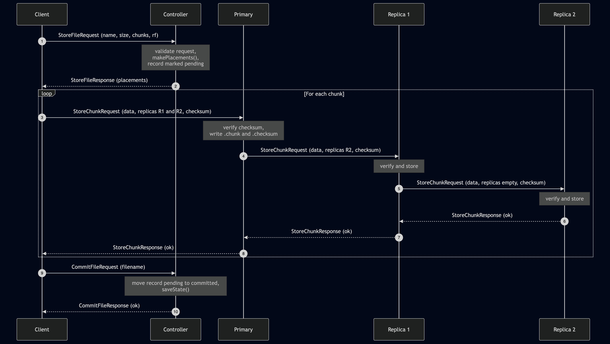

Distributed File System
Languages: Go, Protocol Buffers, JSONTechnologies: TCP Sockets, Distributed Systems, SHA-256 Checksums, Goroutines

This project is a distributed file system built in Go for my CS 677 Big Data course at the University of San Francisco. Based on the course requirements for Project 1, the system includes a Controller, Storage Nodes, and a Client that communicate over TCP sockets using Protocol Buffers.
The client breaks files into chunks, asks the controller for placement decisions, and sends chunk data directly to storage nodes. The system supports configurable replication, parallel retrieval, node registration, metadata tracking, and controller persistence so files can still be managed after restart.
Core features include:
- Chunk-based storage and parallel retrieval across multiple storage nodes
- Pipeline replication with configurable replication factor for fault tolerance
- SHA-256 checksum validation, corruption detection, and self-repair from replicas
- Heartbeat-based node monitoring, file listing, deletion, and node statistics reporting
This project strengthened my understanding of distributed systems design, fault tolerance, message-based communication, and building reliable storage workflows across a multi-node environment.
← Back to Main Page